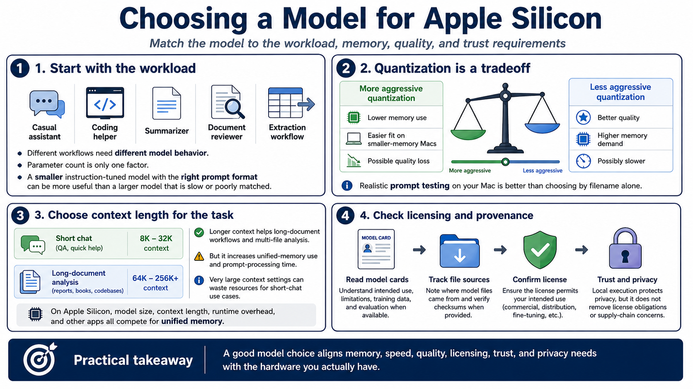

Choosing Models for Apple Silicon
Connecting to LMS... Progress: in progress

Narration
Choosing a model for Apple Silicon starts with the workload. A casual assistant, coding helper, summarizer, document reviewer, and extraction workflow may each need different model behavior. Model size and parameter count matter, but they are not the whole story. A smaller instruction-tuned model with the right prompt format can be more useful than a larger model that is slow or poorly matched.
Quantization level is a practical memory and quality decision. More aggressive quantization can reduce RAM requirements and make a model fit on a lower-memory Mac, but it may reduce reasoning quality, instruction following, or consistency. Less aggressive quantization may improve quality but require more memory and run more slowly. Testing realistic prompts is better than choosing by filename alone.
Context length should be selected for the task. Long-document workflows may need more context, but larger context windows increase memory use and prompt processing time. If the workflow is short chat, a very large context setting may simply waste resources. Apple Silicon can be strong for local workflows, but model size, context length, runtime overhead, and other applications still compete for unified memory.
Licensing and provenance matter. Read model cards where available, track the source of model files, and understand whether the license permits your intended use. Local execution does not erase license obligations or supply chain concerns. A good model choice aligns memory, speed, quality, licensing, trust, and privacy needs with the hardware actually available.